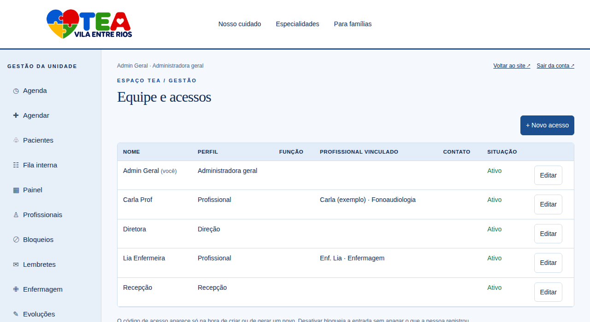
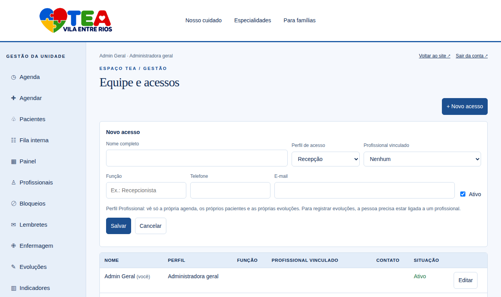
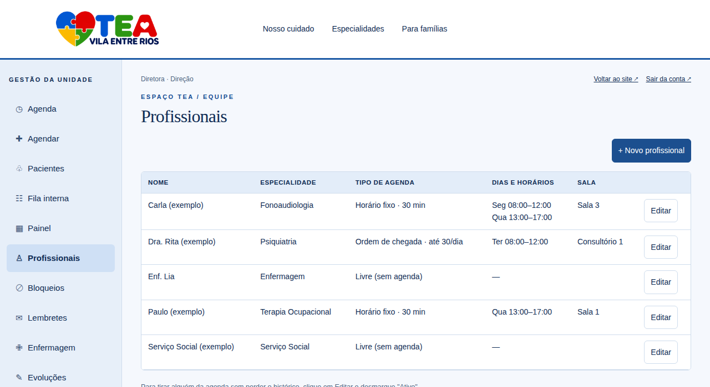
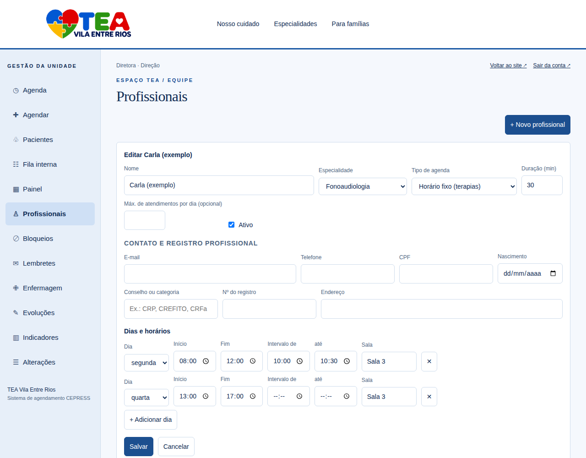
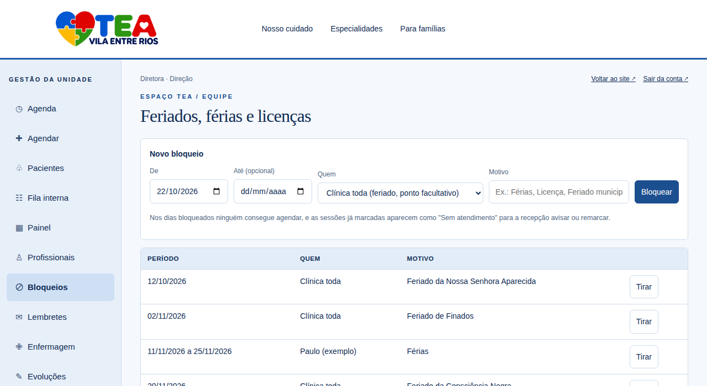
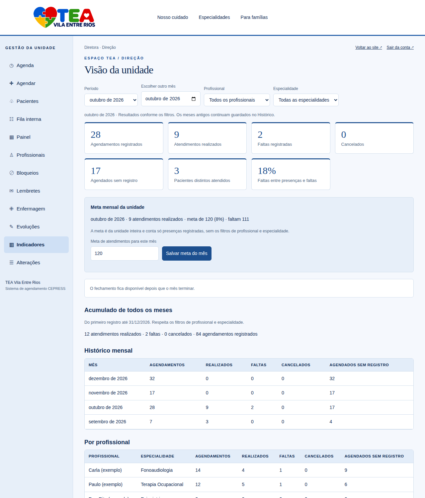
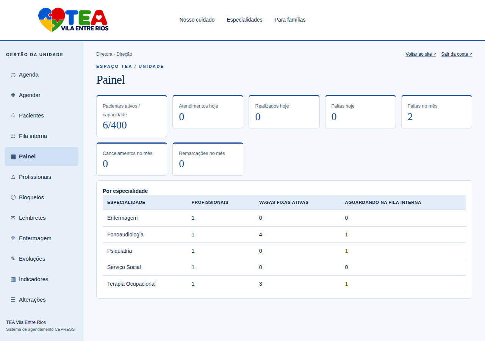
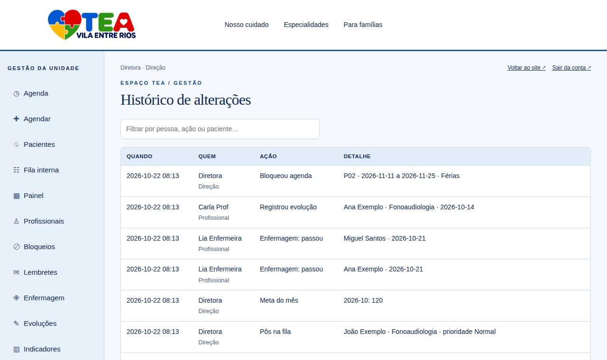

Como administrar o sistema do Espaço TEA Vila Entre Rios: site, área da equipe, acessos, profissionais, indicadores, planilha, publicação de versões e cópias de segurança.
Prefeitura de Belford Roxo · Operação: CEPRESS Versão do sistema: 25 · Outubro de 2026 Uso interno da Direção, CEPRESS e Administradora geral. Este manual contém os endereços administrativos do sistema: não divulgue.
Sumário
Como o sistema funciona
Endereços importantes
Perfis e permissões
Equipe e acessos (criar, mudar e desativar)
Profissionais, expediente e salas
Feriados, férias e licenças (Bloqueios)
Indicadores, meta e fechamento do mês
Painel e a regra das 3 faltas
Histórico de alterações
Evoluções e sigilo
A planilha: o que tem em cada aba
O que pode e o que não pode mexer na planilha
Menu CEPRESS da planilha e sincronização de prontuários
Rotinas automáticas
Cópia de segurança e como recuperar dados
O código do sistema e como publicar uma versão nova
Segurança e proteção de dados
Problemas comuns e soluções
Pendências e limites conhecidos
Rotina recomendada da direção
O passo a passo das telas do dia a dia (agenda, agendar, presença, falta, fila, lembretes, enfermagem, evoluções) está no Manual da Equipe. Este manual trata do que é exclusivo da gestão.
1Como o sistema funciona
O sistema tem três partes, todas dentro da conta Google da unidade (viniciusgp45@gmail.com):
Site + Área da equipeO que as pessoas abrem no navegador. A página pública apresenta a unidade; a Área da equipe é o sistema de trabalho, aberto com código pessoal.
⇄
Código (Apps Script)O "motor": confere o código de cada pessoa, aplica as regras (conflitos, permissões, sigilo) e grava na planilha.
⇄
Planilha "CEPRESS - Agenda"O banco de dados. Cada aba guarda uma parte: pacientes, profissionais, agendamentos, evoluções etc.
Tudo o que a equipe faz no site é gravado na hora na planilha. Todos os computadores veem a mesma informação.
As permissões são verificadas no servidor (no código), não só escondendo botões. Mesmo que alguém tente "forçar" uma ação, o servidor recusa.
Cada pessoa entra com o próprio código. Por isso cada gravação fica registrada com o nome de quem fez.
Duas pessoas clicando no mesmo horário ao mesmo tempo não conseguem agendar em dobro: o sistema grava um pedido de cada vez.
2Endereços importantes
Link do sistema (para a equipe usar) — este é o endereço oficial, que não muda ao publicar versões novas:
Faixa cinza do GoogleNo alto do site aparece "Este aplicativo foi criado por um usuário do Google Apps Script". É padrão do Google para sistemas hospedados assim e não indica problema. Hoje cada pessoa precisa estar logada numa conta Google para abrir o link (veja o capítulo 19).
3Perfis e permissões
Perfil
Pode
Não pode
Administradora geral
Tudo: equipe e acessos, cadastros, agenda, indicadores, fechamento e reabertura de mês, histórico. Consulta todas as evoluções (cada consulta fica registrada).
Editar evolução de outra pessoa.
Direção e CEPRESS
Agenda, cadastros de pacientes e profissionais, bloqueios, fila, painel, indicadores, meta, fechamento do mês, histórico de alterações. Evoluções: só as próprias ou as compartilhadas com ela.
Criar acessos; reabrir mês fechado; ler evoluções não compartilhadas.
Administração
Agenda, agendamentos, pacientes, fila, painel, lembretes, cadastro de profissionais e bloqueios.
Indicadores, histórico, evoluções.
Recepção
Agenda, agendamentos, pacientes, fila, painel, lembretes, consulta da enfermagem.
Cadastro de profissionais, bloqueios, indicadores, evoluções.
Profissional
Só a própria agenda e os pacientes que atende; presença/falta dos próprios atendimentos; evoluções próprias e compartilhar. Conta ligada a Enfermagem registra a passagem dos pacientes.
Ver agenda e pacientes de outros; cadastros; indicadores.
Quem precisa de "Profissional vinculado"?Todo profissional que vai fazer evolução precisa ter o acesso ligado ao seu cadastro de profissional. Sem isso, o sistema não sabe de quem é a agenda nem quem é o autor da evolução.
4Equipe e acessos
Só a Administradora geral vê o menu Equipe.

Lista de acessos da equipe.
Criar um acesso
Abra Equipe e clique em + Novo acesso.
Preencha o Nome completo (não pode repetir), o Perfil de acesso, a Função, telefone e e-mail.
Se for profissional que atende, escolha o Profissional vinculado. Para o perfil Profissional isso é obrigatório.
Clique em Salvar.
Aparece uma caixa amarela com o código de acesso. Anote e entregue só para essa pessoa. Por segurança, o código não aparece de novo.

Formulário de novo acesso.
Atalho a partir do profissionalEm Profissionais → Editar → Configurar acesso, a tela Equipe abre já com o profissional escolhido (ou com o acesso que já existe para ele).
Esqueceu o código / código vazou
Em Equipe, clique em Editar na pessoa.
Marque Gerar código novo (o atual deixa de valer) e clique em Salvar.
Entregue o novo código. O antigo para de funcionar na hora.
Desligamento, férias longas, afastamento
Clique em Editar, desmarque Ativo e salve. A pessoa não entra mais, mas tudo o que ela registrou continua no sistema com o nome dela. Para voltar, marque Ativo de novo.
Regras que o sistema impõe
Sempre existe pelo menos uma Administradora geral ativa (o sistema não deixa tirar a última).
Um profissional só pode estar ligado a um acesso ativo.
Nunca apague linhas da aba Usuários: prefira desativar. Assim o histórico mantém os nomes.
5Profissionais, expediente e salas

Lista de profissionais com dias, horários e salas.
Cadastrar ou editar
Abra Profissionais e clique em + Novo profissional (ou Editar).
Preencha Nome e Especialidade. Se a especialidade não existir, escolha + Nova especialidade… e digite o nome.
Escolha o Tipo de agenda:
Horário fixo (terapias) — informe a Duração da sessão (ex.: 30 min) e, se quiser, o máximo de atendimentos por dia;
Ordem de chegada (médicos) — informe o Máx. por dia;
Livre (sem agenda) — para serviços sem horário (ex.: Serviço Social, Enfermagem).
Preencha contato e registro profissional (e-mail, telefone, CPF, nascimento, conselho, nº do registro, endereço).
Em Dias e horários, clique em + Adicionar dia para cada turno: dia, início, fim, intervalo (almoço) de/até e sala. Um dia pode ter dois turnos (ex.: manhã e tarde).
Clique em Salvar.

Cadastro do profissional com expediente, intervalo e sala.
Como o expediente vira horários
Com sessão de 30 minutos, das 8h às 17h e almoço das 12h às 13h, a agenda oferece 8:00 até 11:30 e 13:00 até 16:30 (16 horários). Com almoço das 13h às 14h: 8:00 até 12:30 e 14:00 até 16:30. O intervalo bloqueia o horário inteiro.
O sistema confere
Dois turnos do mesmo profissional não podem se sobrepor.
Conflito de sala: dois profissionais ativos não podem usar a mesma sala no mesmo dia em horários que se cruzam.
Se você mudar o horário e alguma vaga fixa ficar fora do novo expediente, aparece um aviso com a lista dessas vagas para remarcar ou encerrar.
Tirar um profissional da agenda
Edite e desmarque Ativo. O histórico e as evoluções dele continuam. Antes, encerre ou transfira as vagas fixas dos pacientes dele (ficha do paciente → Encerrar). Lembre de desativar também o acesso dele em Equipe.
6Feriados, férias e licenças (Bloqueios)

Tela Bloqueios.
Abra Bloqueios.
Escolha De e, se for mais de um dia, Até.
Em Quem: Clínica toda (feriado, ponto facultativo, dedetização…) ou um profissional (férias, licença, curso).
Escreva o Motivo e clique em Bloquear.
Nos dias bloqueados ninguém agenda. As sessões que já estavam marcadas aparecem na agenda como Sem atendimento — a recepção deve avisar ou remarcar esses pacientes. Para desfazer, clique em Tirar e confirme.
Feriados já cadastradosOs feriados nacionais e os de Belford Roxo (Emancipação 3/4, São Jorge 23/4, Nossa Senhora da Conceição 8/12) estão cadastrados até 2028. Todo ano, confira o calendário da Prefeitura (pontos facultativos, Carnaval, Corpus Christi) e acrescente o que faltar.
7Indicadores, meta e fechamento do mês
O menu Indicadores (Visão da unidade) é da Direção, CEPRESS e Administradora geral.

Visão da unidade.
O que aparece
Agendamentos registrados, atendimentos realizados, faltas, cancelados, agendados sem registro, pacientes distintos atendidos e % de faltas (entre presenças e faltas).
Meta mensal da unidade, % atingido e quantos faltam.
Acumulado de todos os meses, histórico mês a mês, resultados por profissional e por especialidade.
Fila interna: quantas pessoas aguardam em cada especialidade.
Filtros: Período (meses com registro), Escolher outro mês, Profissional e Especialidade.
Como os números são contados
Realizados = presença registrada. Agendados sem registro = sessões que ninguém marcou (nem presença, nem falta, nem cancelamento) — se esse número estiver alto em meses passados, a equipe esqueceu de registrar.
Sessão remarcada conta uma vez só, no dia novo. Sessões em feriado/bloqueio não contam.
Os números são calculados a partir dos registros; o sistema não inventa dados de meses sem registro.
Definir a meta do mês
Escolha o mês, digite em Meta de atendimentos para este mês e clique em Salvar meta do mês. Cada mês guarda a sua meta.
Fechar o mês
Depois de conferir que presenças e faltas do mês estão todas registradas:
Escolha o mês (só aparece depois que o mês terminou).
Clique em Fechar … e depois em Confirmar fechamento.
A partir daí ninguém muda presença, falta, agendamento ou remarcação daquele mês, e os números ficam definitivos. Só a Administradora geral pode Reabrir o mês.
8Painel e a regra das 3 faltas

Painel da unidade.
O Painel mostra o dia e o mês: pacientes ativos e capacidade, atendimentos e faltas de hoje, faltas, cancelamentos e remarcações do mês, resumo por especialidade (profissionais, vagas fixas ativas, fila) e os pacientes que mais faltaram nos últimos 60 dias.
3 faltas seguidas sem justificativa
Quando um paciente falta 3 vezes seguidas com o mesmo profissional sem justificativa, ele aparece no quadro "3 faltas seguidas sem justificativa", com as datas. A direção decide:
Encerrar vaga e pôr na fila — encerra a vaga fixa e coloca o paciente na fila interna daquela especialidade (com observação "3 faltas").
Inativar paciente — inativa o paciente.
As duas pedem um segundo clique para confirmar e ficam no histórico. Falta com justificativa quebra a sequência. Se nenhuma ação for tomada, o horário continua reservado.
9Histórico de alterações

Histórico de alterações.
O menu Alterações mostra as 500 ações mais recentes: quando, quem (com perfil), ação e detalhe. Use o campo de filtro para procurar por pessoa, paciente ou tipo de ação. A lista completa fica na aba Registro da planilha.
Ficam registrados: agendamentos, presenças, faltas, cancelamentos, remarcações, cadastros e edições de pacientes e profissionais, fila, bloqueios, meta, fechamento e reabertura de mês, criação e mudança de acessos, evoluções e complementos, autorizações e revogações de compartilhamento, consultas a evoluções e passagens pela enfermagem.
10Evoluções e sigilo
Só o profissional que atendeu (conta vinculada) faz a evolução, e só depois da presença registrada. Não existe evolução de atendimento futuro.
A evolução gravada não muda. Correções entram como complemento, com data e autor. Atendimento com evolução não pode ser cancelado nem remarcado.
Outro profissional (ou a Direção/CEPRESS) só lê se o autor compartilhar: uma evolução, todas daquele paciente, ou todas do autor. O autor pode revogar.
Compartilhar não abre a ficha do paciente para quem recebe.
A Administradora geral consulta todas as evoluções; cada consulta aparece no histórico como "Consultou evoluções · acesso geral".
Recepção e Administração não veem evoluções.
Modelos por especialidade
Há modelos para 13 especialidades (Psicologia, Terapia Ocupacional, Fonoaudiologia, Neuropsicologia, Psicopedagogia, Neuropediatria, Psiquiatria, Musicoterapia, Psicomotricidade, Fisioterapia, Serviço Social, Enfermagem e Nutrição), todos com a estrutura da ficha de Terapia Ocupacional: objetivo, duração, chegada, condutas, resposta, saída e observações. Especialidades sem modelo próprio recebem um modelo genérico.
Revisão pelas equipesSó o modelo de Terapia Ocupacional foi baseado na ficha real da unidade. Os outros são propostas iniciais, não protocolos validados. Peça a cada equipe que revise os itens; a mudança dos itens é feita no código (lista CONDUTAS no arquivo Código.gs) e exige publicar uma versão nova.
A autoria registrada não equivale a assinatura digital certificada.
11A planilha: o que tem em cada aba
Aba
O que guarda
Config
Configurações: Capacidade da unidade, metas ("Meta AAAA-MM"), meses fechados ("Fechado AAAA-MM") e a ligação com a planilha de prontuários. Protegida.
Cadastro dos profissionais (ID P01, P02…, especialidade, tipo de agenda, duração, máximo por dia, ativo, contato).
Expediente
Turnos de cada profissional: dia, início, fim, intervalo e sala.
Vagas Fixas
Horários que se repetem (semanal, quinzenal, a cada 4 semanas), com início, fim e status.
Atendimentos
Sessões avulsas e o que aconteceu em cada sessão (presença, falta, cancelamento…) dos últimos 90 dias e do futuro.
Histórico
Atendimentos com mais de 90 dias (movidos para cá toda madrugada, para o sistema continuar rápido).
Fila Interna
Pacientes aguardando outra terapia: especialidade, entrada, prioridade, status.
Bloqueios
Feriados (sem profissional = clínica toda), férias e licenças.
Registro
Histórico de alterações (só acrescenta linhas).
Enfermagem
Passagens pela enfermagem. Protegida.
Evoluções
Evoluções e complementos (o conteúdo fica na coluna "Conteúdo"). Protegida.
Compartilhamentos
Autorizações de leitura de evoluções e revogações. Protegida.
"Protegida" = só a conta dona da planilha edita direto na aba; a equipe grava pelo site.
12O que pode e o que não pode mexer na planilha
Nunca faça
Renomear ou apagar abas, ou mudar os títulos da primeira linha (o sistema procura as colunas pelo nome).
Apagar linhas de Evoluções, Compartilhamentos, Registro, Enfermagem, Atendimentos ou Histórico.
Mudar a ordem das linhas ou classificar (ordenar) as abas.
Mudar o formato das colunas (o prontuário "0001" viraria o número 1).
Compartilhar a planilha com quem não é da gestão — ela tem dados de saúde e os códigos de acesso.
Pode fazer com cuidado (prefira sempre as telas do site)
Corrigir um erro de digitação num nome ou telefone.
Acrescentar feriados na aba Bloqueios (data no formato AAAA-MM-DD; Profissional ID vazio = clínica toda).
Mudar a Capacidade na aba Config.
Consultar, filtrar (com "Criar um filtro") e copiar dados para relatórios.
Toda mudança feita direto na planilha não passa pelas regras do sistema (conflitos, permissões) e não aparece no histórico de alterações. Por isso as telas são sempre o caminho preferido.
13Menu CEPRESS da planilha e sincronização de prontuários
Ao abrir a planilha, aparece no alto o menu CEPRESS:
Item
Para que serve
Configurar planilha
Cria abas e colunas que faltarem e reaplica as listas de opções. Rode depois de publicar uma versão que traga abas ou colunas novas. Não apaga nada.
Novo usuário
Jeito antigo de criar acesso (nasce com perfil Recepção). Prefira a tela Equipe do site.
Sincronizar pacientes agora
Copia a lista de pacientes da planilha de prontuários da unidade (se estiver configurada).
Sincronizar pacientes a cada hora
Liga a cópia automática de hora em hora.
Ligar com a planilha de prontuários
Na aba Config, preencha: Prontuários: planilha (link ou ID), Prontuários: aba e os nomes das colunas de nº, nome, responsável, telefone e status. A coluna de status precisa ter só "Ativo" ou "Inativo". Por segurança, a sincronização não roda se a planilha de origem vier vazia, com colunas erradas, ou com queda grande no número de ativos — nesse caso aparece uma mensagem e nada é alterado.
AtençãoCom a sincronização ligada, a lista de pacientes é a da planilha de prontuários: mudanças de nome, telefone ou status feitas no site podem ser substituídas na próxima cópia. Combine com a equipe onde o cadastro é mantido.
14Rotinas automáticas
Rotina
Quando
O que faz
Arquivamento
Todo dia, de madrugada (3h)
Move atendimentos com mais de 90 dias de Atendimentos para Histórico. Grava primeiro no Histórico e só depois apaga — nunca perde dados.
Cópia de segurança
Todo domingo (4h)
Faz uma cópia da planilha inteira no Google Drive (veja o capítulo 15).
Saída automática
30 min sem uso
Tira a pessoa do sistema no computador.
Proteção de login
Sempre
5 códigos errados bloqueiam o aparelho por 10 minutos.
As rotinas ficam no editor do código, no ícone de relógio Acionadores (menu da esquerda). Não apague esses acionadores.
15Cópia de segurança e como recuperar dados
Como funciona
Todo domingo às 4h o Google copia a planilha inteira para o Drive da conta da unidade, com o nome "CEPRESS - Agenda (cópia de segurança AAAA-MM-DD)".
A cópia guarda todas as abas, inclusive evoluções e códigos. Ela fica só no Drive da conta: não compartilhe.
As cópias se acumulam (uma por semana). De tempos em tempos, apague as mais antigas no Drive (por exemplo, mantenha os últimos 2 meses).
Antes de confiar na cópia: faça um testeNo editor do código, escolha a função copiaDeSeguranca na lista do alto e clique em Executar. Se o Google pedir autorização, aceite com a conta da unidade. Depois procure a cópia no Drive. Repita o teste a cada alguns meses.
Recuperar algo apagado por engano
Primeiro tente o Histórico de versões da própria planilha: Arquivo → Histórico de versões → Ver histórico de versões. O Google guarda versões antigas automaticamente.
Se não resolver, abra no Drive a cópia de segurança mais recente de antes do problema.
Na cópia, selecione as linhas que sumiram e copie (Ctrl+C).
Na planilha principal, cole no fim da aba correspondente (Ctrl+Shift+V, para colar só os valores).
Abra o site e confira se a informação voltou.
Nunca substitua a planilha principal pela cópia (o sistema está ligado à planilha original pelo identificador dela); copie só os dados.
16O código do sistema e como publicar uma versão nova
O código fica no projeto Apps Script ligado à planilha (Extensões → Apps Script). Arquivos:
Arquivo
Conteúdo
Código.gs
Servidor: permissões, gravações, indicadores, evoluções, modelos das especialidades (CONDUTAS), menu da planilha, rotinas.
Logica.gs
Regras de horário, conflito, datas, CPF e CNS.
Index.html
O site e todas as telas da Área da equipe.
appsscript.json
Configuração (fuso de São Paulo, quem pode acessar).
Uma cópia de todos os arquivos, com testes automáticos e versões anteriores, está na pasta do projeto no computador e no HD externo (pasta CEPRESS → apps-script).
Publicar uma mudança
Faça a mudança no editor e clique no ícone de disquete Salvar projeto.
Se a mudança traz abas ou colunas novas, rode configurar (lista de funções → configurar → Executar) ou use o menu CEPRESS → Configurar planilha.
Teste no link de teste (/dev) (capítulo 2): o site precisa abrir com logo e botão "Área da equipe", e o login precisa responder.
Só então publique: Implantar → Gerenciar implantações → ícone de lápis (Editar) → em Versão escolha Nova versão → Implantar → Concluído.
O link oficial continua o mesmo e já mostra a versão nova.
Cuidados técnicos importantes
Não use "Nova implantação": isso cria outro link. Sempre edite a implantação existente.
No Index.html, nunca escreva endereços como 'https://...' entre aspas simples ou crases: o Google corta a linha no "//" e o site inteiro para de funcionar. Escreva 'https:\/\/...' ou use aspas duplas.
Não deixe o editor aberto em duas abas do navegador ao mesmo tempo (o salvamento trava).
Algo deu errado depois de publicar? Em Gerenciar implantações → Editar, escolha a versão anterior e Implantar: o site volta como estava.
17Segurança e proteção de dados
O sistema guarda dados pessoais e de saúde de crianças e adolescentes (LGPD — dados sensíveis). Responsabilidades da gestão:
Códigos pessoais: um por pessoa, entregue pessoalmente. Desative no mesmo dia em que alguém sair da equipe.
Perfis certos: dê a cada pessoa só o perfil de que ela precisa.
Conta Google da unidade: senha forte e verificação em duas etapas ligada. Quem tem essa conta tem acesso a tudo (planilha, código e cópias).
Planilha e cópias: não compartilhe. Toda a equipe trabalha pelo site.
Computadores compartilhados: oriente a equipe a clicar em "Sair da conta" ao terminar.
Revisão periódica: uma vez por mês, abra Equipe e confira se todos os acessos ativos ainda são necessários; olhe o histórico de "Consultou evoluções".
Evoluções: são sigilosas; o compartilhamento é decisão do autor.
18Problemas comuns e soluções
Problema
Causa provável e solução
Alguém diz que o código "não funciona"
Confira em Equipe se o acesso está Ativo. Se o nome da pessoa foi digitado de novo direto na aba Usuários, a planilha pode ter gerado um código novo. Gere um código novo pela tela e entregue.
"Muitas tentativas erradas neste aparelho"
Esperar 10 minutos. O bloqueio é só daquele computador.
O site abre em branco, sem logo ou sem o botão "Área da equipe"
Erro na última versão publicada. Volte para a versão anterior (capítulo 16) e corrija testando no link /dev.
Profissional não aparece para agendar
Verifique se está Ativo, se tem dias e horários cadastrados e se o tipo de agenda não é "Livre".
Horário não aparece livre
Pode ser vaga fixa de outro paciente (em semanas seguintes), intervalo, bloqueio ou o máximo do dia.
Profissional não consegue evoluir
Acesso sem "Profissional vinculado", ou a presença ainda não foi registrada.
Indicador com muitos "agendados sem registro"
Presenças/faltas não registradas. Peça à recepção para completar antes de fechar o mês.
Preciso mudar algo num mês fechado
A Administradora geral reabre o mês nos Indicadores, faz a correção e fecha de novo.
Sistema lento
Normal levar de 1 a 3 segundos por ação. Se piorar muito, confira se o arquivamento diário está ativo (Acionadores).
19Pendências e limites conhecidos
Endereço e telefone da unidade no rodapé do site ainda não foram incluídos (aguardando confirmação).
Acesso sem conta Google e domínio próprio: hoje o link exige que a pessoa esteja logada numa conta Google e o endereço é do Google. Ter um nome próprio (ex.: teavilaentrerios.com.br) e acesso sem conta Google depende de uma decisão da gestão (mudar a configuração de acesso e hospedar o site em outro serviço).
Modelos de evolução: precisam de revisão clínica de cada especialidade (capítulo 10).
Lembretes de WhatsApp são semiautomáticos: a recepção envia um por um. Envio automático exigiria contratar a API oficial do WhatsApp Business.
Fila do Complexo Regulador (externa) não é integrada.
Plano terapêutico: a ficha mostra as terapias pelos agendamentos; ainda não há plano terapêutico com objetivos e validade.
Assinatura digital: a autoria fica registrada, mas não é assinatura certificada.
Dados reais: antes de começar, importar cadastros e histórico existentes e testar com contas reais de cada perfil.
20Rotina recomendada da direção
Quando
O que fazer
Todo dia
Olhar o Painel: faltas de hoje e o quadro de 3 faltas seguidas.
Toda semana
Conferir a fila interna (prioridades) e se a cópia de segurança de domingo apareceu no Drive.
Fim do mês
Conferir "agendados sem registro" nos Indicadores, pedir as correções, fechar o mês e definir a meta do mês seguinte.
Todo mês
Revisar acessos em Equipe (quem saiu, quem mudou de função) e apagar cópias de segurança antigas.
Antes de feriados e férias
Cadastrar em Bloqueios com antecedência, para a recepção avisar as famílias.
Todo ano
Cadastrar os feriados do ano seguinte e revisar os profissionais e expedientes.